Jump and Fall with Outside Assets: a Platformer in Construct 3
Bring your Piskel alien and platforms into Construct 3, then make the alien run, jump, land on platforms and fall off the edges.
What you will build
Your alien runs left and right with the arrow keys and jumps with the Up arrow. It stands on your ground, log and block, and if it walks off the edge it falls. If it falls off the bottom of the screen, it goes back to the start.
| Tool | What it is for | Link |
|---|---|---|
| Construct 3 | Building the game | editor.construct.net |
Files you need (in your Downloads folder)
| File | What it is | From |
|---|---|---|
| ground.png, block.png, log.png | The three platforms | Piskel Lesson 0: Three Platforms |
| Your alien sprite sheet PNG (5 poses in one row, 160 × 32) | The player | Piskel Lesson 1: Jumping Alien Sprite |
Missing one? Download the example: ground.png · block.png · log.png · alien.png


- Construct 3 runs in the browser. Nothing needs installing.
- Everything you see in the game comes from your Piskel files. Nothing is drawn in Construct 3.
- The game uses 1 event (3 with the extra in Part 5), so it fits easily in the free version of Construct 3.
- Time: about one class period.
- Click a part to open it. Opening one part closes the others. Tick every checkpoint box before you move on; your ticks are remembered on this computer.
Lesson brief
If you already know Construct 3, follow the chart and you can finish from it alone. Click any box to jump to its full steps; the Back to the brief button brings you back here.
Part 1 · Start the project
Name Platformer · Viewport 1280 × 720
Layer 0: Transparent off
Background color 135, 206, 235
Part 2 · Bring in your assets
From Sheet: Columns 5 · Rows 1
Width 32 · Height 32 · Add all frames
Import frames
Delete empty frame 0 · Speed 0
Position 160, 500 · Size 64 × 64
Player 160, 500 · 64 × 64
ground 160, 620 · 256 × 64
log 480, 540 · 192 × 64
block 700, 460 · 64 × 64
ground (Object types) 960, 380
Part 3 · Run, jump and land
Jump strength 650 · Gravity 1500
Preview: falls through everything
Preview: lands and stays put
Walk off an edge: falls
Part 4 · Back to the start
→ Set position 160, 500
→ Platform Set vector Y 0
Part 5 · Extra: face the way you walk
Right is down → Set not mirrored
Each colour is one part. Codes like 2B mean Part 2, section B. Underlined words are links.
Part 1 · Start the project
The game area is 1280 × 720 with a sky-blue background.
| Where things are in Construct 3 | Location on screen |
|---|---|
| Properties Bar | Left side panel |
| Project Bar | Top-right panel |
| Layers Bar | Bottom-right panel |
| Layout 1 and Event sheet 1 tabs | Along the top of the middle area |
| Preview (▶ play button) | Main toolbar, top of the window |
If a bar is missing, open Menu → View and tick it.
1A · New project
| New project | Value |
|---|---|
| Name | Platformer |
| Viewport size | 1280 × 720 |
- Go to editor.construct.net and log in if you have an account.
- Click New project, type Platformer in Name, and 1280 and 720 in Viewport size. Click Create.
- An empty layout opens with a dotted rectangle on it: that is what the player will see.
1B · Layout size and sky
| Properties | Field | Value |
|---|---|---|
| Layout 1 | Size | 1280 × 720 |
| Layer 0 | Initially visible | On (leave it) |
| Transparent | Off (already off to start) | |
| Background color | Red 135, Green 206, Blue 235 |
- In the Project Bar (top-right panel), open Platformer → Layouts and click Layout 1.
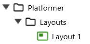
In the Properties Bar (left side panel), find Size and click the small ▶ (play) arrow beside it. It opens into two boxes, Width and Height. Type 1280 and 720. The arrow now points down, and the Properties Bar should look like this: The layout edge lines up with the dotted rectangle.
The layout edge lines up with the dotted rectangle. - In the Layers Bar (bottom-right panel), click Layer 0.
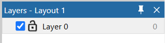
Its settings appear in the Properties Bar (left side panel). Under Appearance, check that Transparent is unticked. It is unticked to start, so you usually only need to look. Leave Initially visible ticked.
Leave Initially visible ticked. - Click Background color (left side panel, under Layer 0) and type 135, 206, 235 for Red, Green and Blue. The layout turns sky blue, and the Properties Bar shows:
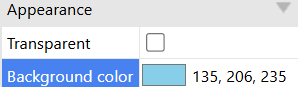
Part 2 · Bring in your assets
Place every object by typing its numbers into the Properties Bar (left side panel). You can also place objects by eye: left-click one on the layout and drag it. That works well, as long as each gap is small enough to jump. You'll find out in Part 3 when you Preview. If something gets nudged, press Ctrl+Z or type the numbers back in.
| Object | File | Position X | Position Y | Size W | Size H |
|---|---|---|---|---|---|
| Player | alien sprite sheet | 160 | 500 | 64 | 64 |
| ground (first) | ground.png | 160 | 620 | 256 | 64 |
| log | log.png | 480 | 540 | 192 | 64 |
| block | block.png | 700 | 460 | 64 | 64 |
| ground (second) | from Object types | 960 | 380 | 256 | 64 |
Each size is 4 times the Piskel size: the 32 × 32 alien shows at 64 × 64, and the 64 × 16 ground shows at 256 × 64.
2A · Player: your Jumping Alien
| Import Frames → From Sheet | Value |
|---|---|
| File | Your alien sprite sheet PNG |
| Columns | 5 (type it) |
| Rows | 1 |
| Width | 32 |
| Height | 32 |
| Order | Left to right |
| Animation Speed (after importing) | 0 |
- On the Layout 1 tab (middle of the screen), double-click inside the layout (or right-click it and choose Insert new object).
- The Create new object type window opens. Click Sprite (under General; scroll down, or type Sprite in the Search box at the top-right).
 Type Player in Name at the bottom.
Type Player in Name at the bottom. Click Insert, then click on the layout. The Animations Editor opens over the middle of the screen with one blank frame.
Click Insert, then click on the layout. The Animations Editor opens over the middle of the screen with one blank frame.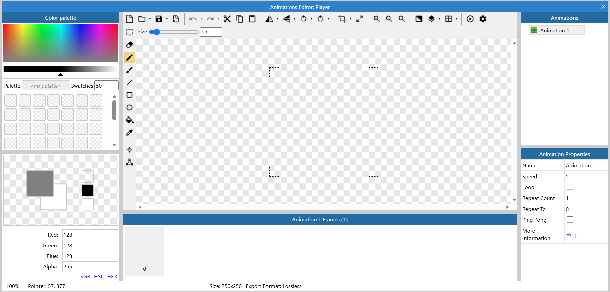
- Find the Animation 1 Frames panel (bottom middle of the Animations Editor, under the image, with a blue title bar). It shows one blank frame, numbered 0.
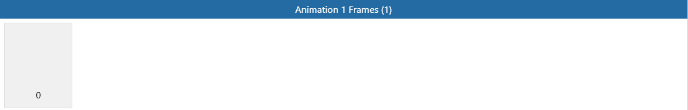
Right-click an empty white spot in that panel. A menu opens: Hold the mouse over Import Frames (the arrow ▶ on its right opens two more choices, From Files and From Sheet) and click From Sheet.
Hold the mouse over Import Frames (the arrow ▶ on its right opens two more choices, From Files and From Sheet) and click From Sheet.
- Pick your alien sprite sheet PNG from Downloads and click Open. A window opens with a row of boxes along the top and your sheet underneath. Type 5 in Columns. The rest are already right, so just check them: Rows 1, Width 32, Height 32, Order: Left to right. This cuts the sheet into 5 poses across, 1 row down, each 32 × 32 pixels.
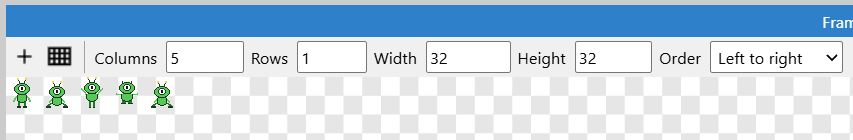
Then click Add all frames (the grid button at the left end of that bar). Your five poses appear along the bottom of this window, numbered 0 to 4, each 32x32. Frame 0 is your alien standing.
(the grid button at the left end of that bar). Your five poses appear along the bottom of this window, numbered 0 to 4, each 32x32. Frame 0 is your alien standing.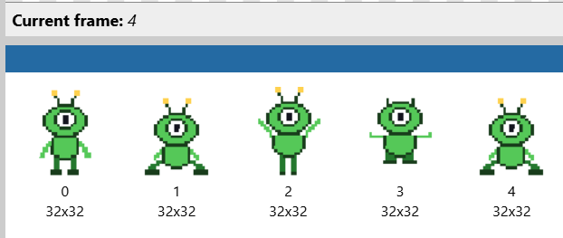
- Click Import frames (bottom-right of the window, beside Cancel).
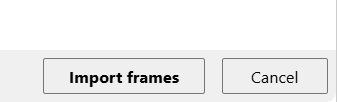
The window closes. The Animation 1 Frames panel now reads (6): the empty frame 0 from the start, then your five poses as frames 1 to 5.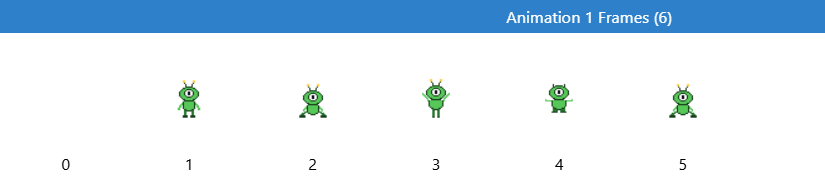
- Delete the empty frame: right-click frame 0 (the empty one at the far left) and choose Delete. The panel now reads Animation 1 Frames (5), and frame 0 is your alien standing.
- In the Animations list (top-right of the editor), click Animation 1. The panel under it changes to Animation Properties. (While a frame is selected, that panel shows Frame Properties instead, with Index and Duration and no Speed.)
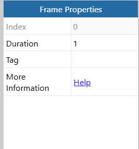
In Animation Properties, Speed starts at 5.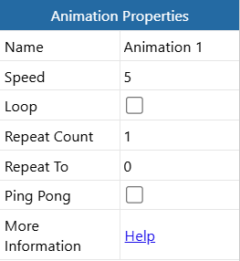
Click the 5 and type 0, then press Enter, so the alien stays in its standing pose instead of jumping on the spot all the time. It should now look like this (leave Loop and Ping Pong unticked):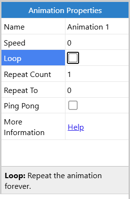
- Close the Animations Editor with the X in its top-right corner. The standing alien is now on the layout.
- Click the alien on the layout. In the Properties Bar (left side panel), type Position 160, 500 and Size 64, 64 (the Piskel size 32 × 32 times 4). The alien grows to twice its height and sits above where the first ground will go. If Position or Size shows as one line, click the small ▶ arrow beside it to open the X and Y (or Width and Height) boxes.
2B · Platforms: ground, log and block
| Object | File | Piskel size | Size W × H to type (Piskel size × 4) | Position X, Y |
|---|---|---|---|---|
| Player (alien, from 2A) | alien sprite sheet | 32 × 32 | 64 × 64 | 160, 500 |
| ground (first) | ground.png | 64 × 16 | 256 × 64 | 160, 620 |
| log | log.png | 48 × 16 | 192 × 64 | 480, 540 |
| block | block.png | 16 × 16 | 64 × 64 | 700, 460 |
| ground (second) | from Object types | 64 × 16 | 256 × 64 | 960, 380 |
- Open your Downloads folder beside Construct. Drag ground.png straight onto the layout. It becomes a sprite called ground, listed under Object types in the Project Bar (top-right panel). It looks tiny at first.
- With the ground still selected, in the Properties Bar (left side panel) type Position 160, 620 and Size 256, 64 (open each with its ▶ arrow). It grows into a wide grassy strip under the alien.
- Drag in log.png. Type Position 480, 540 and Size 192, 64. The log sits up and to the right of the ground.
- Drag in block.png. Type Position 700, 460 and Size 64, 64. The block sits up and to the right of the log.
- For the last one, drag ground from Object types in the Project Bar onto the layout (not ground.png again). Type Position 960, 380 and Size 256, 64. The four platforms now step up like stairs from left to right.
2C · Sharp pixels
| Project properties | Value |
|---|---|
| Sampling | Nearest |
- Zoom in on the alien (hold Ctrl and scroll). The edges look soft, because the 32-pixel alien is stretched to 64.
- Click the project name Platformer at the top of the Project Bar (top-right panel). The project's settings show in the Properties Bar (left side panel). In the Display group, Sampling starts at Trilinear:
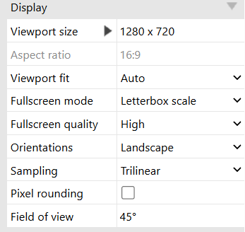
Click Trilinear and choose Nearest from the list. It now reads: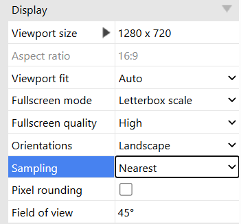
Zoom in on the alien again: every pixel is now a sharp square.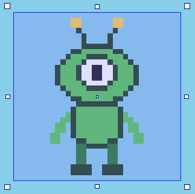
Your layout should look like this: the alien above the first ground, then the log, the block and the second ground stepping up to the right.

Part 3 · Run, jump and land
Two behaviours do almost all the work. Platform gives the character running, jumping and gravity. Solid makes the ground, log and block something to stand on.
How to add a behaviour: click the object on the layout. In the Properties Bar (left side panel), scroll down to the Behaviors group and click the blue Behaviors link beside Add / edit.
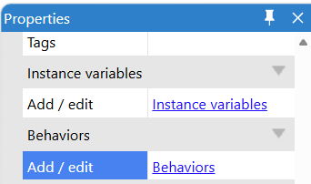
A window opens whose title names the object, for example Player behaviors or ground behaviors. Check it is the object you meant.Click Add new behavior, pick the behaviour, and click Add. Close the window. Its settings now show in the Properties Bar.3A · Player: Platform behaviour
| Platform | Value |
|---|---|
| Max speed | 330 |
| Acceleration | 1500 |
| Deceleration | 1500 |
| Jump strength | 650 |
| Gravity | 1500 |
| Max fall speed | 1000 |
| Double-jump | Off |
| Jump sustain | 0 |
| Default controls | On |
| Enabled | On |
These are Construct's starting values, so you only need to check them.
- Click your alien (the Player) on the layout, not a platform. In the Properties Bar, click the Behaviors link. The window title must read Player behaviors.
- Click Add new behavior. In the list, find the Movements group and click Platform, the running figure at the end of the second row (or type Platform in the Search box).
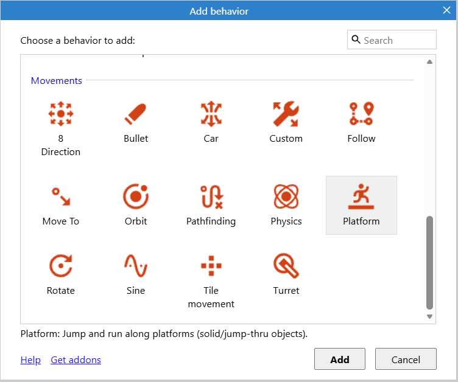
Under the list, the description should read Platform: Jump and run along platforms (solid/jump-thru objects). Click Add. The Player behaviors window now lists Platform: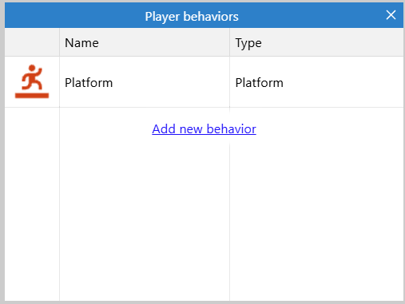
Close the window. - The Player now has the Platform behaviour: running, jumping and gravity. Its settings appear in the Properties Bar under Behaviors. Check the values against the table.
- Click Preview (the play button at the top). (Shortcut: F5)
- The alien drops straight through the ground and off the bottom of the screen. Gravity works, but there is nothing solid to stand on yet. Close the preview tab.
3B · Solid on ground, log and block
- Click the ground and add the Solid behaviour (under Attributes). Then do the same for the log and the block. Each object type needs its own Solid. Both grounds get it together, because they are the same object.
- Preview. The character falls, lands on the first platform, and stays put.
3C · Test the controls
| Key | What it does |
|---|---|
| ← Left arrow | Run left |
| → Right arrow | Run right |
| ↑ Up arrow | Jump |
- Preview and click inside the game once so it has the keyboard.
- Run right and jump up onto each platform in turn.
- Walk off the edge of a platform. The character falls. If it falls past the bottom of the screen, it is gone for good. Part 4 fixes that.
Part 4 · Back to the start
One event puts the character back on the first platform when it falls off the bottom of the screen.
| Event | Condition (left side) | Actions (right side) |
|---|---|---|
| 1 | Player → Compare Y → Greater than → 800 | Player → Set position → 160, 500 Player → Platform → Set vector Y → 0 |
In words: if the character is below the bottom of the screen (the screen is 720 tall), move it back to the start and stop its fall speed.
- Click the Event sheet 1 tab (along the top of the middle area, beside Layout 1).
- Click Add event → double-click Player → double-click Compare Y. Choose Greater than, type 800, click Done. The condition appears on the left.
- On the same row, click the faint grey Add action text in the middle of the row (it looks greyed out, but it works). Double-click Player → Set position. Type 160 and 500, click Done.
- Click the grey Add action under that action → Player → Set vector Y (in the Platform group). Type 0, click Done. The event now has two actions.
- Preview and walk off a platform into a gap. The character falls off the screen, then drops back onto the first platform.
Part 5 · Extra: face the way you walk
Right now the character always faces the same way. Two events flip it to face the direction it is running. This part is optional.
5A · Keyboard object
- Go to the Layout 1 tab (middle of the screen) and double-click an empty part of the layout. In the window that opens, scroll down to the Input group, click Keyboard, and click Insert.
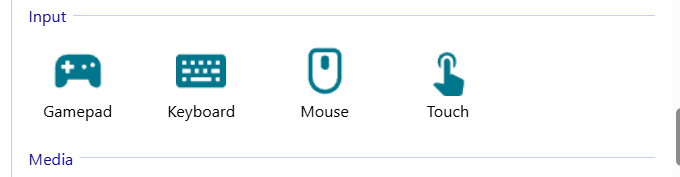
5B · Events 2 and 3
| Event | Condition | Action |
|---|---|---|
| 2 | Keyboard → Key is down → Left arrow | Player → Set mirrored → Mirrored |
| 3 | Keyboard → Key is down → Right arrow | Player → Set mirrored → Not mirrored |
- On the event sheet, click Add event at the bottom of the sheet → Keyboard → Key is down. Click the key box, press the Left arrow, and click Done.
- Grey Add action → Player → Set mirrored → Mirrored → Done.
- Make event 3 the same way with the Right arrow and Not mirrored.
- Preview. Run left and the character turns to face left; run right and it turns back.
Save your work
- Logged in: the first time, Menu → Project → Save as → Cloud save. After that, the Save button (disk icon) saves to the same place. (Shortcut: Ctrl+S)
- Guest: Menu → Project → Save as → Download a copy before you close the tab.
- To hand in: Menu → Project → Save as → Download a copy and upload the .c3p file to Google Classroom (classroom.google.com).